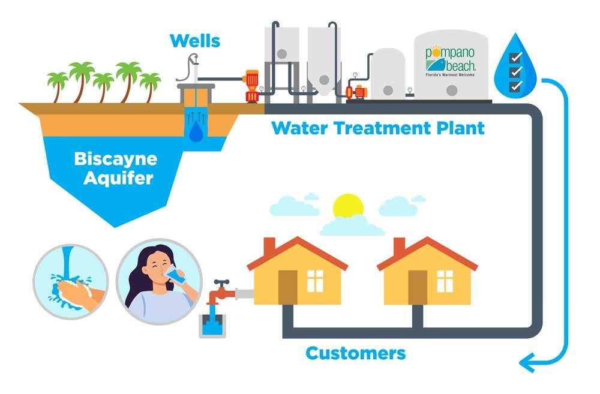

Dondo Water is a non-profit organization committed to providing sustainable and clean water solutions to rural communities and individuals without access to safe drinking water. Our goal is to empower these communities by ensuring they have reliable access to water, improving health, education, and overall quality of life.
Vision
To create a world where every person, no matter where they live, has access to safe, clean water—fostering well-being, growth, and opportunities for all.
